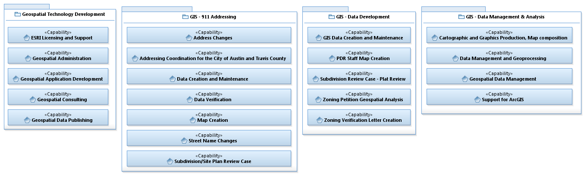

The following model represents the capabilities from review of The City of Austin's GIS Interfaces. The use cases are organized by capability rather than organizational structure.
POC: Aaron Brown | City of Austin
Enterprise IT Architect Senior
Direct: (512) 974-2960 | Mobile: (512) 296-5276
Follow link to GIS Logical Data Model
Figure: COA GIS Capability Model

Table: Use Case Model Outline
| Geospatial Technology Development | 911 Addressing | Data Development | Data Management & Analysis |
|---|---|---|---|
ESRI Licensing and Support
|
Address Changes
|
Data Creation and Maintenance
|
Cartographic and Graphics Production, Map Composition
|
Other non-Capability Mapped Use Cases